在分数四则混合运算中，按照四则运算的顺序进行计算的同时，如果能够根据数据特点灵活运用定律，就可以使计算更简便、迅速，这就是分数的巧算。
分数巧算中用的最多的是乘法分配律，此外还有转化法、合理分拆抵消法、借数逆向思维法、个数折半法、换元法等。
例1 计算：
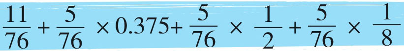
通过观察发现，如果直接算数字较大，计算过程较繁杂。而后面三组乘法中都有分数
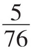
，我们可以提取相同的因数，利用乘法分配律的逆运算进行计算，并且，相同因数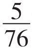
提走后，剩下的0.375可以转化成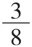
，与其他分数相加。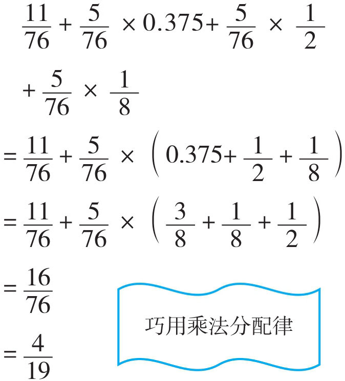
例2 计算：
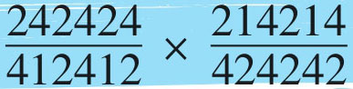
上面的式子，数字循环叠放，并且242424与424242是两个数字循环叠放，而214214与412412是三个数字循环叠放，它们分别放在分数的分子与分母中，我们可以运用乘法分配律将它们转化成积的形式，再约分。如：242424=24×10000+24×100+24×1=24×(10000+100+1)=24×10101，同理，424242=42×10101，214214=214×1001，412412=412×1001。
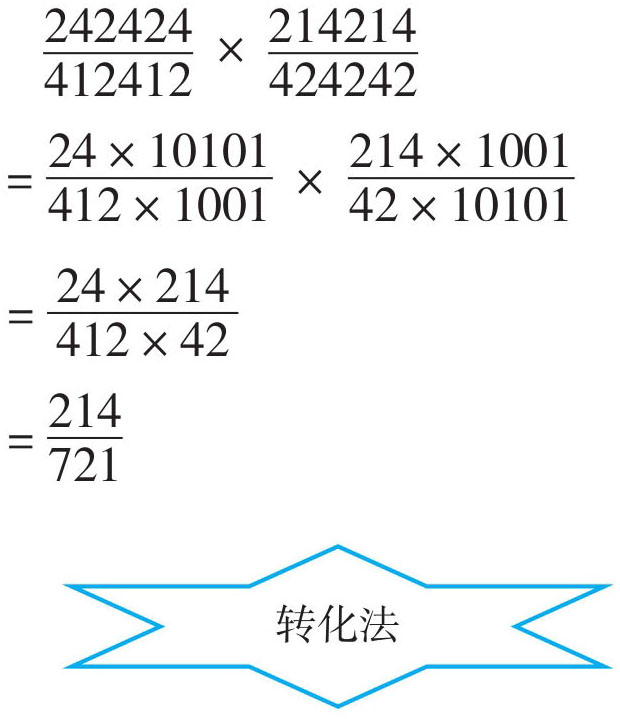
例3 计算：
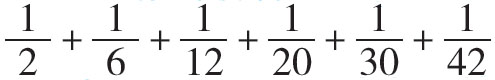
观察发现，上面式子中分子都是1，分母都可以写成两个数相乘的形式，如：
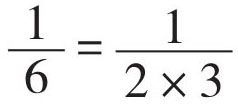
，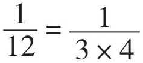
，这样我们就可以分拆成两个单位分数差的形式，如：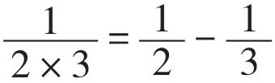
；再通过将一部分数抵消，使计算简便。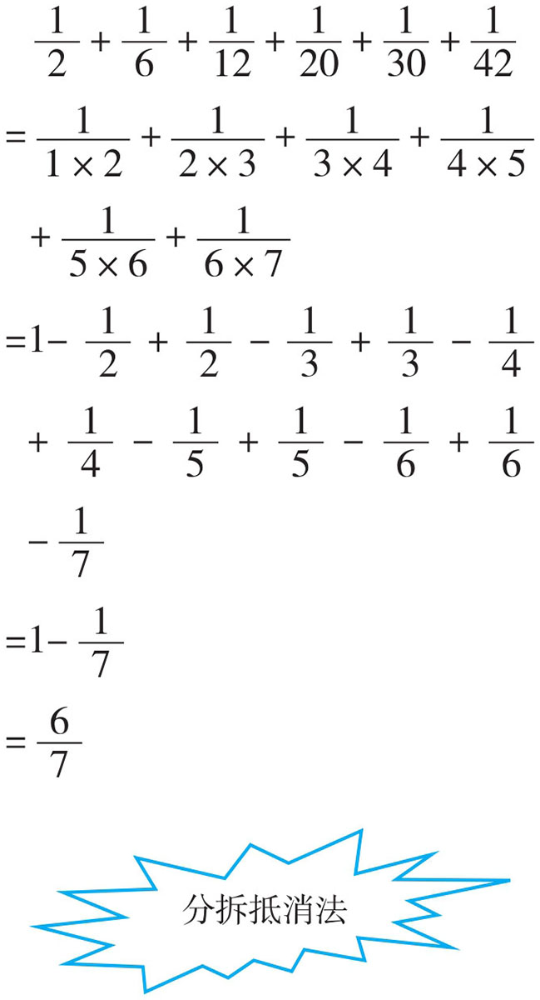
例4 计算：
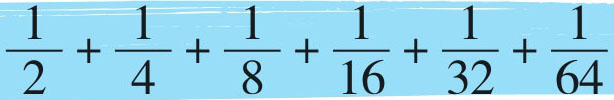
观察发现，算式中的分母依次是前一个数的2倍，分数依次是前一个数的一半。我们用如下图示来找规律：
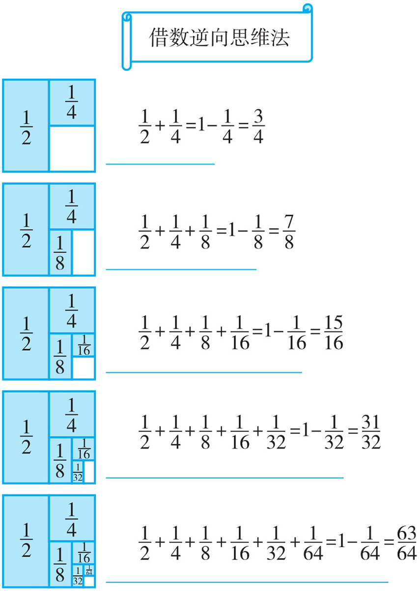
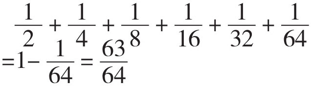
例5 计算：（1）
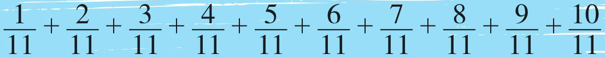
（2）
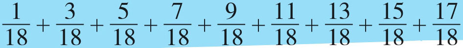
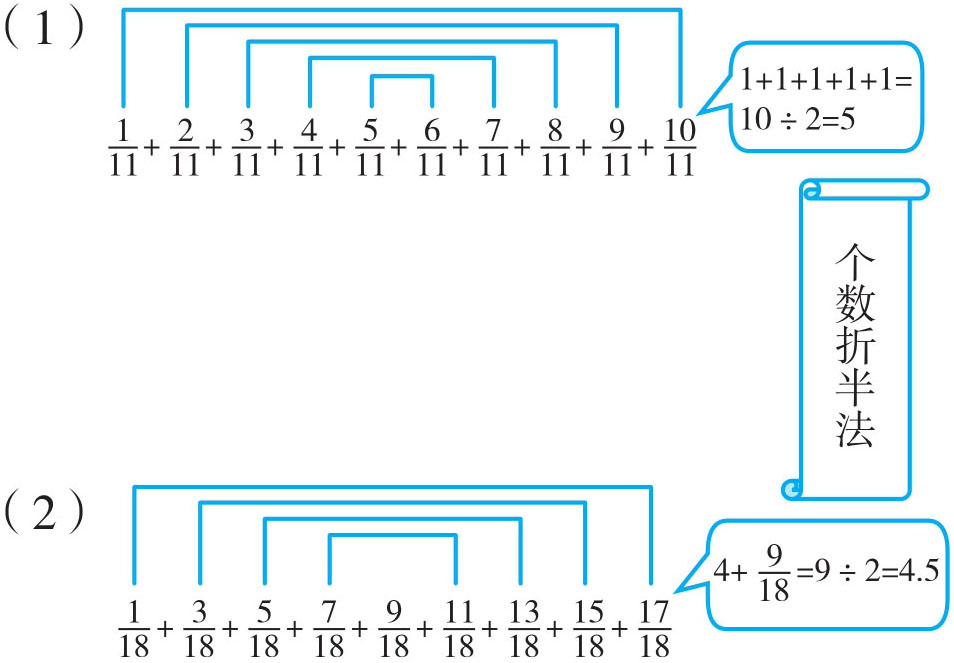
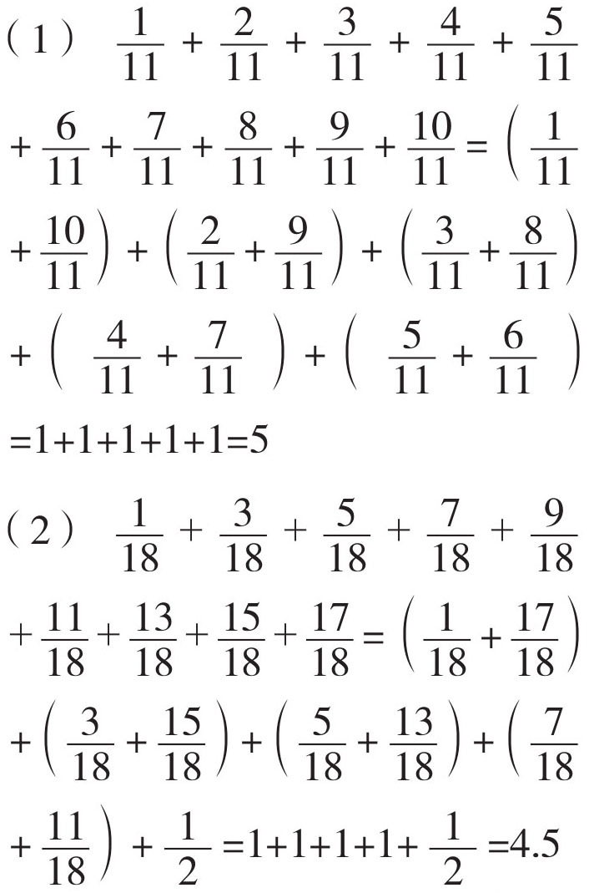
1．计算：
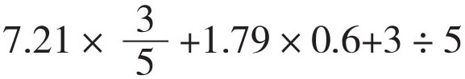
2．计算：
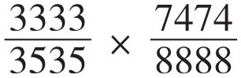
3．计算：
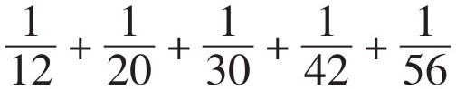
4．计算：
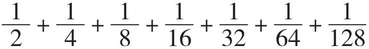
5．计算：
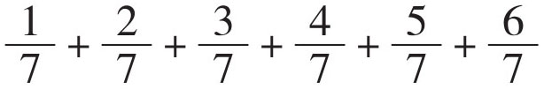
6．
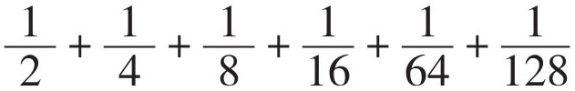
（提示：先借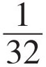
，再还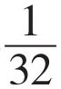
）7．
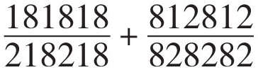
8．
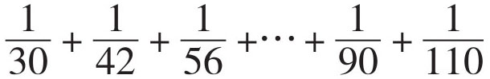
9．
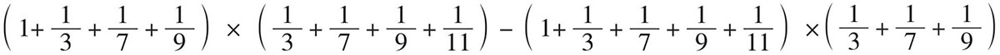
（提示：运用换元法，假定
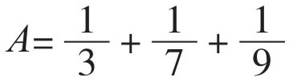
，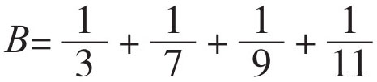
，用字母取代数字去思考。）